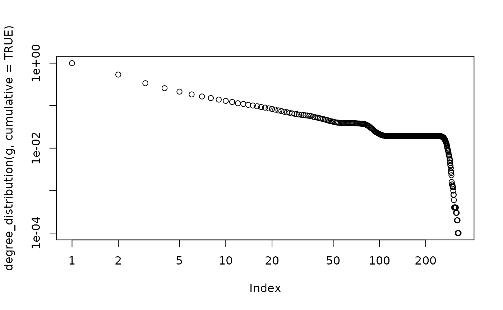

This function generates a non-growing random graph with edge probabilities proportional to node fitness scores.
Usage
sample_fitness(
no.of.edges,
fitness.out,
fitness.in = NULL,
loops = FALSE,
multiple = FALSE
)Arguments
- no.of.edges
The number of edges in the generated graph.
- fitness.out
A numeric vector containing the fitness of each vertex. For directed graphs, this specifies the out-fitness of each vertex.
- fitness.in
If
NULL(the default), the generated graph will be undirected. If notNULL, then it should be a numeric vector and it specifies the in-fitness of each vertex.If this argument is not
NULL, then a directed graph is generated, otherwise an undirected one.- loops
Logical scalar, whether to allow loop edges in the graph.
- multiple
Logical scalar, whether to allow multiple edges in the graph.
Details
This game generates a directed or undirected random graph where the probability of an edge between vertices \(i\) and \(j\) depends on the fitness scores of the two vertices involved. For undirected graphs, each vertex has a single fitness score. For directed graphs, each vertex has an out- and an in-fitness, and the probability of an edge from \(i\) to \(j\) depends on the out-fitness of vertex \(i\) and the in-fitness of vertex \(j\).
The generation process goes as follows. We start from \(N\) disconnected nodes (where \(N\) is given by the length of the fitness vector). Then we randomly select two vertices \(i\) and \(j\), with probabilities proportional to their fitnesses. (When the generated graph is directed, \(i\) is selected according to the out-fitnesses and \(j\) is selected according to the in-fitnesses). If the vertices are not connected yet (or if multiple edges are allowed), we connect them; otherwise we select a new pair. This is repeated until the desired number of links are created.
It can be shown that the expected degree of each vertex will be
proportional to its fitness, although the actual, observed degree will not
be. If you need to generate a graph with an exact degree sequence, consider
sample_degseq() instead.
This model is commonly used to generate static scale-free networks. To
achieve this, you have to draw the fitness scores from the desired power-law
distribution. Alternatively, you may use sample_fitness_pl()
which generates the fitnesses for you with a given exponent.
References
Goh K-I, Kahng B, Kim D: Universal behaviour of load distribution in scale-free networks. Phys Rev Lett 87(27):278701, 2001.
See also
Random graph models (games)
erdos.renyi.game(),
sample_(),
sample_bipartite(),
sample_chung_lu(),
sample_correlated_gnp(),
sample_correlated_gnp_pair(),
sample_degseq(),
sample_dot_product(),
sample_fitness_pl(),
sample_forestfire(),
sample_gnm(),
sample_gnp(),
sample_grg(),
sample_growing(),
sample_hierarchical_sbm(),
sample_islands(),
sample_k_regular(),
sample_last_cit(),
sample_pa(),
sample_pa_age(),
sample_pref(),
sample_sbm(),
sample_smallworld(),
sample_traits_callaway(),
sample_tree()
Author
Tamas Nepusz ntamas@gmail.com
Examples
N <- 10000
g <- sample_fitness(5 * N, sample((1:50)^-2, N, replace = TRUE))
degree_distribution(g)
#> [1] 0.4532 0.2083 0.0883 0.0429 0.0271 0.0207 0.0136 0.0123 0.0096 0.0082
#> [11] 0.0062 0.0046 0.0051 0.0038 0.0037 0.0034 0.0046 0.0015 0.0026 0.0020
#> [21] 0.0024 0.0020 0.0024 0.0020 0.0022 0.0012 0.0012 0.0015 0.0012 0.0013
#> [31] 0.0009 0.0012 0.0010 0.0010 0.0002 0.0008 0.0007 0.0010 0.0016 0.0013
#> [41] 0.0012 0.0012 0.0015 0.0014 0.0008 0.0009 0.0007 0.0013 0.0005 0.0007
#> [51] 0.0007 0.0004 0.0002 0.0002 0.0000 0.0000 0.0004 0.0000 0.0003 0.0000
#> [61] 0.0001 0.0001 0.0000 0.0000 0.0000 0.0000 0.0000 0.0000 0.0000 0.0002
#> [71] 0.0000 0.0003 0.0002 0.0001 0.0003 0.0002 0.0001 0.0002 0.0005 0.0007
#> [81] 0.0009 0.0011 0.0005 0.0006 0.0007 0.0009 0.0006 0.0008 0.0005 0.0006
#> [91] 0.0009 0.0008 0.0006 0.0013 0.0011 0.0006 0.0007 0.0006 0.0004 0.0002
#> [101] 0.0005 0.0000 0.0001 0.0000 0.0004 0.0003 0.0002 0.0001 0.0001 0.0000
#> [111] 0.0000 0.0000 0.0000 0.0000 0.0000 0.0000 0.0000 0.0000 0.0000 0.0000
#> [121] 0.0000 0.0000 0.0000 0.0000 0.0000 0.0000 0.0000 0.0000 0.0000 0.0000
#> [131] 0.0000 0.0000 0.0000 0.0000 0.0000 0.0000 0.0000 0.0000 0.0000 0.0000
#> [141] 0.0000 0.0000 0.0000 0.0000 0.0000 0.0000 0.0000 0.0000 0.0000 0.0000
#> [151] 0.0000 0.0000 0.0000 0.0000 0.0000 0.0000 0.0000 0.0000 0.0000 0.0000
#> [161] 0.0000 0.0000 0.0000 0.0000 0.0000 0.0000 0.0000 0.0000 0.0000 0.0000
#> [171] 0.0000 0.0000 0.0000 0.0000 0.0000 0.0000 0.0000 0.0000 0.0000 0.0000
#> [181] 0.0000 0.0000 0.0000 0.0000 0.0000 0.0000 0.0000 0.0000 0.0000 0.0000
#> [191] 0.0000 0.0000 0.0000 0.0000 0.0000 0.0000 0.0000 0.0000 0.0000 0.0000
#> [201] 0.0000 0.0000 0.0000 0.0000 0.0000 0.0000 0.0000 0.0000 0.0000 0.0000
#> [211] 0.0000 0.0000 0.0000 0.0000 0.0000 0.0000 0.0000 0.0000 0.0000 0.0000
#> [221] 0.0000 0.0000 0.0000 0.0000 0.0000 0.0000 0.0000 0.0000 0.0000 0.0000
#> [231] 0.0000 0.0000 0.0000 0.0000 0.0000 0.0000 0.0000 0.0000 0.0000 0.0000
#> [241] 0.0001 0.0000 0.0000 0.0000 0.0000 0.0000 0.0000 0.0000 0.0001 0.0000
#> [251] 0.0003 0.0000 0.0002 0.0000 0.0001 0.0001 0.0001 0.0002 0.0002 0.0003
#> [261] 0.0004 0.0002 0.0005 0.0000 0.0005 0.0007 0.0005 0.0004 0.0003 0.0004
#> [271] 0.0007 0.0004 0.0008 0.0006 0.0006 0.0002 0.0005 0.0012 0.0006 0.0006
#> [281] 0.0003 0.0005 0.0006 0.0006 0.0007 0.0008 0.0003 0.0001 0.0007 0.0003
#> [291] 0.0004 0.0002 0.0001 0.0003 0.0003 0.0002 0.0001 0.0001 0.0002 0.0000
#> [301] 0.0004 0.0003 0.0000 0.0000 0.0000 0.0002 0.0000 0.0001 0.0000 0.0000
#> [311] 0.0001
plot(degree_distribution(g, cumulative = TRUE), log = "xy")
